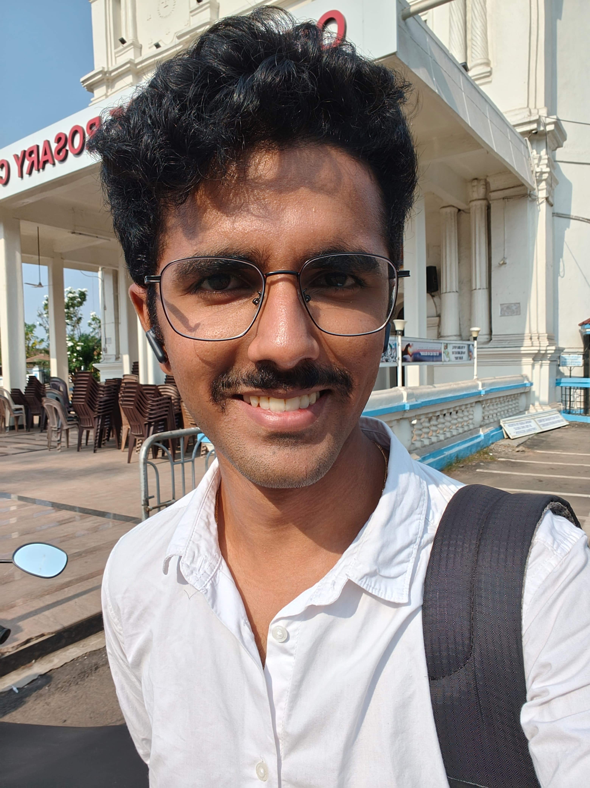

Ketan Kunkalikar
Btech CSE, National Institute of Technology, Goa

Summary:
I am a third-year Btech student, studying Computer Science and Engineering at NIT Goa. I am a
competitive programmer (primary languages: C++, Java) and a Web Developer.
Education:
- Btech, CSE - National Institute of Technology Goa : Dec 2021 - present
- 12th Science (HSSC) - Loyola Higher Secondary School of Science, Margao : June 2018 - March
2020
- 10th (SSC) - Bhatikar Model High School, Margao : 2017 - 2018
Work Experience:
- Software Developer Intern - Distilled DDD - May 2024 - present
- Helped build an AI product to aid Domain-Driven Designers in their Domain Product.
Skillset:
- Soft Skills:
- Fluent verbal Communication
- Lucid written communication
- Presentation Skills
- Active Listening
- Public Speaking
- Resourcefulness
- Critical and Analytical thinking
- Efficient Time Management
- Teamwork
- Hard Skills:
- C, C++, Python, Java, JavaScript Programming
- HTML, CSS
- Algorithm Design using Data Structures
- Database management using SQL (MySQL, Postgress)
- Object Oriented Programming
- Functional Programming
- Touch Typing (average speed: 80wpm)
Projects:
- Bookbot in Python:
- It conducts static analysis on text files such as academic papers, novels and so on. It's also my first
Git Project!
- Tetris Clone using Pygame:
- Built the classic arcade game Tetris using Python's Pygame library.
Achievements:
- Second overall place in GEC's Arena de Codigo annual
Competitive Programming Contest - April 2023
-
First place in DBCE's CodeWars Annual Competitive
Programming Contest for successive editions - November 2022, 2023
-
Second Place in GEC's Binary Nebula Coding Challenge - March 2024
-
Rated above 1800 (4*) on CodeChef